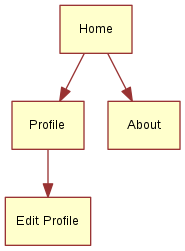
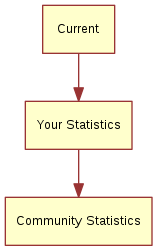

6. Qt Quick Controls 2¶
Section author: e8johan
Note
Last Build: June 26, 2019 at 07:15 CET
The source code for this chapter can be found in the assets folder.
This chapter introduces how to use Qt Quick Controls 2 to create a user interface built from standard components such as buttons, labels, sliders and so on. We will look at how various styles can be used to move user interfaces between platforms before diving into custom styling.
6.1. Introduction to Controls¶
Using Qt Quick from scratch gives you primited graphical and interaction elements from which you can build your user interfaces. Using Qt Quick Controls 2 you start from a slightly more structured set of controls to build from. The controls range from simple text labels and buttons to more complex ones such as sliders and dials. These element are handy if you want to create a user interface based on classic interaction patterns as they provide a foundation to stand on.
The Qt Quick Controls 2 comes with a number of styles out of the box that are shown in the table below. The Default style is a basic flat style. The Universal style is based on the Microsoft Universal Design Guidelines, while Material is based on Google’s Material Design Guidelines, and the Fusion style is a desktop oriented style.
Some of the styles can be tweaked by tweaking the used palette. The Imagine is a style based on image assets, this allows a graphical designer to create a new style without writing any code at all, not even for palette colour codes.
| Style | Example |
|---|---|
| Default | 
|
| Universal | 
|
| Material | 
|
| Fusion | 
|
| Imagine | 
|
The Qt Quick Controls 2 is available from the QtQuick.Controls import module. In this module you will find the basic controls such as buttons, labels, checkboxes, sliders and so on. In addition to these controls, the following modules are also of interest:
| Module | Description |
|---|---|
QtQuick.Controls |
The basic controls. |
QtQuick.Templates |
Provides the non-visual part of the controls. |
QtQuick.Dialogs |
Provides standard dialogs for showing messages, picking files, picking colours, and picking fonts, as well as the base for custom dialogs. |
QtQuick.Controls.Universal |
Universal style theming support. |
QtQuick.Controls.Material |
Material style theming support. |
Qt.labs.calendar |
Controls for supporting date picking and other calendar related interactions. |
Qt.labs.platform |
Support for platform native dialogs for common tasks such as picking files, colours, etc, as well as system tray icons and standard paths. |
Notice that the Qt.labs modules are experimental, meaning that their APIs can have breaking changes between Qt versions.
Note
The QtQuick.Dialogs module is a Qt Quick Controls 1 module, but it is also the only way to do dialogs without depending on the QtWidgets module. See below for more details.
6.2. An Image Viewer¶
Let’s look at a larger example of how Qt Quick Controls 2 is used. For this, we will create a simple image viewer.
First, we create it for desktop using the Fusion style, then we will refactor it for a mobile experience before having a look at the final code base.
6.2.1. The Desktop Version¶
The desktop version is based around a classic application window with a menu bar, a tool bar and a document area. The application can be seen in action below.

The image viewer main window.
We use the Qt Creator project template for an empty Qt Quick application as a starting point. However, we replace the default Window element from the template with a ApplicationWindow from the QtQuick.Controls module. The code below shows main.qml where the window itself is created and setup with a default size and title.
import QtQuick 2.0
import QtQuick.Controls 2.4
import QtQuick.Dialogs 1.2
ApplicationWindow {
visible: true
width: 640
height: 480
// ...
}
The ApplicationWindow consists of four main areas as shown below. The menu bar, tool bar and status bar are usually populated by instances of MenuBar, ToolBar or TabBar controls, while the contents area is where the children of the window goes. Notice that the image viewer application does not feature a status bar, that is why it is missing from the code show here, as well as from the figure above.

The main areas of the ApplicationWindow
As we are targetting desktop, we enforce the use of the Fusion style. This can be done via environment variables, command line arguments, or programmatically in the C++ code. We do it the latter way by adding the following line to the main.cpp:
QQuickStyle::setStyle("Fusion");
We then start building the user interface in main.qml by adding an Image element as the contents. This element will hold the images when the user opens them, so for now it is just a place holder. The background property is used to provide an element to the window to place behind the contents. This will be shown when there is no image loaded, and as borders around the image if the aspect ratio down not let it fill the contents area of the window.
ApplicationWindow {
// ...
background: Rectangle {
color: "darkGray"
}
Image {
id: image
anchors.fill: parent
fillMode: Image.PreserveAspectFit
asynchronous: true
}
// ...
}
We then continue by adding the ToolBar. This is done using the toolBar property of the window. Inside the tool bar we add a Flow element which will let the contents fill the width of the control before overflowing to a new row. Inside the flow we place a ToolButton.
The ToolButton has a couple of interesting properties. The text is straight forward. However, the icon.name is taken from the freedesktop.org Icon Naming Specification. In that document, a list of standard icons are listed by name. By refering to such a name, Qt will pick out the correct icon from the current desktop theme.
In the onClicked signal handler of the ToolButton is the final piece of code. It calls the open method on the fileOpenDialog element.
ApplicationWindow {
// ...
header: ToolBar {
Flow {
anchors.fill: parent
ToolButton {
text: qsTr("Open")
icon.name: "document-open"
onClicked: fileOpenDialog.open()
}
}
}
// ...
}
The fileOpenDialog element is a FileDialog control from the QtQuick.Dialogs module. The file dialog can be used to open or save files, as well as picking directories.
Note
The QtQuick.Dialogs module is a Qt Quick Controls 1 module, but it is also the only way to do dialogs without depending on the QtWidgets module. See how to implement native dialogs using Qt.labs.platform further down.
In the code we start by assigning a title. Then we set the starting folder using the shortcut property. The shortcut property holds links to common folders such as the user’s home, documents, and such. After that we set a name filter that controls what files the user can see and pick using the dialog.
Finally, we reach the onAccepted signal handler where the Image element that holds the window contents is set to show the the selected file. There is an onRejected signal as well, but we do not need to handle it in the image viewer application.
ApplicationWindow {
// ...
FileDialog {
id: fileOpenDialog
title: "Select an image file"
folder: shortcuts.documents
nameFilters: [
"Image files (*.png *.jpeg *.jpg)",
]
onAccepted: {
image.source = fileOpenDialog.fileUrl
}
}
// ...
}
We then continue with the MenuBar. To create a menu, one puts Menu elements inside the menu bar, and then populate each Menu with MenuItem elements.
In the code below, we create two menus, File and Help. Under File, we place Open using the same icon and action as the tool button in the tool bar. Under Help you find About which triggers a call to the open method of the aboutDialog element.
Notice that the ampersands (“&”) in the title property of the Menu and the text property of the MenuItem turns the following character into a keyboard shortcut, e.g. you reach the file menu by pressing Alt+F, followed by Alt+O to trigger the open item.
ApplicationWindow {
// ...
menuBar: MenuBar {
Menu {
title: qsTr("&File")
MenuItem {
text: qsTr("&Open...")
icon.name: "document-open"
onTriggered: fileOpenDialog.open()
}
}
Menu {
title: qsTr("&Help")
MenuItem {
text: qsTr("&About...")
onTriggered: aboutDialog.open()
}
}
}
// ...
}
The aboutDialog element is based on the Dialog control from the QtQuick.Controls module, which is the base for custom dialogs. The dialog we are about to create is shown in the figure below.

The about dialog.
The code for the aboutDialog can be split into three parts. First, we setup the dialog window with a title. Then we provide some contents for the dialog – in this case, a Label control. Finally, we opt to use a standard Ok button to close the dialog.
ApplicationWindow {
// ...
Dialog {
id: aboutDialog
title: qsTr("About")
Label {
anchors.fill: parent
text: qsTr("QML Image Viewer\nA part of the QmlBook\nhttp://qmlbook.org")
horizontalAlignment: Text.AlignHCenter
}
standardButtons: StandardButton.Ok
}
// ...
}
The end result of all this is an, albeit simple, desktop application for viewing images.
6.2.2. Moving to Mobile¶
There are a number of differences in how a user interface is expected to look an behave on a mobile device compared to a desktop application. The biggest difference for our application is how the actions are accessed. Instead of a menu bar and a tool bar, we will use a drawer from which the user can pick the actions. The drawer can swiped in from the side, but we also offer a hamburger button in the header. The resulting application with the drawer open can be seen below.

The image viewer with a drawer menu.
First of all, we need to change the style that is set in main.cpp from Fusion to Material:
QQuickStyle::setStyle("Material");
Then we start adapting the user interface. We start by replacing the menu with a drawer. In the code below, the Drawer component is added as a child to the ApplicationWindow. Inside the drawer, we put a ListView containing ItemDelegate instances. It also contains a ScrollIndicator used to show what part of a long list that is shown. As our list only consists of two items, this is not visible in this example.
The drawer ListView is populated from a ListModel where each ListItem corresponds to a menu item. Each time an item is clicked, in the onClicked method, the triggered method of the corresponding ListItem is called. This way, we can use a single delegate to trigger different actions.
ApplicationWindow {
// ...
id: window
Drawer {
id: drawer
width: Math.min(window.width, window.height) / 3 * 2
height: window.height
ListView {
focus: true
currentIndex: -1
anchors.fill: parent
delegate: ItemDelegate {
width: parent.width
text: model.text
highlighted: ListView.isCurrentItem
onClicked: {
drawer.close()
model.triggered()
}
}
model: ListModel {
ListElement {
text: qsTr("Open...")
triggered: function(){ fileOpenDialog.open(); }
}
ListElement {
text: qsTr("About...")
triggered: function(){ aboutDialog.open(); }
}
}
ScrollIndicator.vertical: ScrollIndicator { }
}
}
// ...
}
The next change is the header in the ApplicationWindow. Instead of a desktop style toolbar, we add a button to open the drawer and the title of our application.

The image viewer with the mobile header.
The ToolBar contains a two child child elements: a ToolButton and a Label.
The ToolButton control opens the drawer. The corresponding close call can be found in the ListView delegate. When an item has been selected the drawer is closed. The icon used for the ToolButton comes from the Material Design Icons page.
ApplicationWindow {
// ...
header: ToolBar {
ToolButton {
id: menuButton
anchors.left: parent.left
anchors.verticalCenter: parent.verticalCenter
icon.source: "images/baseline-menu-24px.svg"
onClicked: drawer.open()
}
Label {
anchors.centerIn: parent
text: "Image Viewer"
font.pixelSize: 20
elide: Label.ElideRight
}
}
// ...
}
Finally we make the background of the toolbar pretty — or at least orange. To do this, we alter the Material.background attached property. This comes from the QtQuick.Controls.Material 2.1 module and only affects the Material style.
import QtQuick.Controls.Material 2.1
ApplicationWindow {
// ...
header: ToolBar {
Material.background: Material.Orange
// ...
}
With these few changes we have converted our desktop image viewer to a mobile friendly version.
6.2.4. Native Dialogs¶
When using the image viewer you will notice that it uses a non-standard file selector dialog. This makes it look out of place.
The Qt.labs.platform module can help us solve this. It provides QML bindings to native dialogs such as the file selector, font selector and colour selector. It also provides APIs to create system tray icons, as well as system global menus that sits on top of the screen (e.g. as in OS X). The cost of this is a dependency on the QtWidgets module, as the widget based dialog is used as a fallback where the native support is missing.
In order to integrate a native file dialog into the image viewer, we need to import the Qt.labs.platform module. As this module has name clashes with the module it replaces, QtQuick.Dialogs, it is important to remove the old import statement.
In the actual file dialog element, we have to change how the folder property is set, and ensure that the onAccepted handler uses the file property instead of the fileUrl property. Apart from these details, the usage is identical to the FileDialog from QtQuick.Dialogs.
import QtQuick 2.0
import QtQuick.Controls 2.4
import Qt.labs.platform 1.0
ApplicationWindow {
// ...
FileDialog {
id: fileOpenDialog
title: "Select an image file"
folder: StandardPaths.writableLocation(StandardPaths.DocumentsLocation)
nameFilters: [
"Image files (*.png *.jpeg *.jpg)",
]
onAccepted: {
image.source = fileOpenDialog.file
}
}
// ...
}
In addition to the QML changes, we also need to alter the project file of the image viewer to include the widgets module.
QT += quick quickcontrols2 widgets
And we need to update main.qml to instantiate a QApplication object instead of a QGuiApplication object. This is because the QGuiApplication class contains the minimal environment needed for a graphical application, while QApplication extends QGuiApplication with features needed to support QtWidgets.
#include <QApplication>
// ...
int main(int argc, char *argv[])
{
QApplication app(argc, argv);
// ...
}
With these changes, the image viewer will now use native dialogs on most platforms. The platforms supported are iOS, Linux (with a GTK+ platform theme), macOS, Windows and WinRT. For Android, it will use a default Qt dialog provided by the QtWidgets module.
6.3. Common Patterns¶
There a number of common user interface patterns that can be implemented using Qt Quick Controls 2. In this section, we try to demonstrate how some of the more common ones can be built.
6.3.1. Nested Screens¶
For this example we will create a tree of pages that can be reached from the previous level of screens. The structure is pictured below.
The key component in this type of user interface is the StackView. It allows us to place pages on a stack which then can be poped when the user wants to go back. In the example here, we will show how this can be implemented.
The initial home screen of the application is shown in the figure below.

The home screen page.
The application start in main.qml where we have an ApplicationWindow containing a ToolBar, a Drawer, a StackView and a home page element, Home. We will look into each of the components below.
import QtQuick 2.9
import QtQuick.Controls 2.2
ApplicationWindow {
// ...
header: ToolBar {
// ...
}
Drawer {
// ...
}
StackView {
id: stackView
anchors.fill: parent
initialItem: Home {}
}
}
The home page, Home.qml consists of a Page, which is an control element that support headers and footers. In this example we simply center a Label with the text Home Screen on the page. This works because the contents of a StackView automatically fills the stack view, so the page has the right size for this to work.
import QtQuick 2.9
import QtQuick.Controls 2.2
Page {
title: qsTr("Home")
Label {
anchors.centerIn: parent
text: qsTr("Home Screen")
}
}
Returning back to the main.qml, we now look at the drawer part. This is where the navigation to the pages begin. The active parts of the user interface is the ÌtemDelegate items. In the onClicked handler, the next page is pushed onto the stackView.
As shown in the code below, it possible to push either a Component or a reference to a specific QML file. Either way results in that a new instance is created and is pushed onto the stack.
ApplicationWindow {
// ...
Drawer {
id: drawer
width: window.width * 0.66
height: window.height
Column {
anchors.fill: parent
ItemDelegate {
text: qsTr("Profile")
width: parent.width
onClicked: {
stackView.push("Profile.qml")
drawer.close()
}
}
ItemDelegate {
text: qsTr("About")
width: parent.width
onClicked: {
stackView.push(aboutPage)
drawer.close()
}
}
}
}
// ...
Component {
id: aboutPage
About {}
}
// ...
}
The other half of the puzzle is the toolbar. The idea is that a back button is shown when the stackView contains more than one page, otherwise a menu button is shown. The logic for this can be seen on the text property where the "\u..." strings represents the unicode symbols that we need.
In the onClicked handler, we can see that when there is more than one page on the stack, the stack is poped, i.e. the top page is removed. If the stack contains only one item, i.e. the home screen, the drawer is opened.
Below the ToolBar, you find a Label. This element shows the title of each page in the center of the header.
ApplicationWindow {
// ...
header: ToolBar {
contentHeight: toolButton.implicitHeight
ToolButton {
id: toolButton
text: stackView.depth > 1 ? "\u25C0" : "\u2630"
font.pixelSize: Qt.application.font.pixelSize * 1.6
onClicked: {
if (stackView.depth > 1) {
stackView.pop()
} else {
drawer.open()
}
}
}
Label {
text: stackView.currentItem.title
anchors.centerIn: parent
}
}
// ...
}
Now we’ve seen how to reach the About and Profile pages, but we also want to make it possible to reach the Edit Profile page from the Profile page. This is done via the Button on the Profile page. When the button is clicked, the EditProfile.qml file is pushed onto the StackView.

The profile page with the Edit button.
import QtQuick 2.9
import QtQuick.Controls 2.2
Page {
title: qsTr("Profile")
Column {
anchors.centerIn: parent
spacing: 10
Label {
anchors.horizontalCenter: parent.horizontalCenter
text: qsTr("Profile")
}
Button {
anchors.horizontalCenter: parent.horizontalCenter
text: qsTr("Edit");
onClicked: stackView.push("EditProfile.qml")
}
}
}
6.3.2. Side by Side Screens¶
For this example we create a user interface consisting of three pages that the user can shift through. The pages are shown in the diagram below. This could be the interface of a health tracking app, tracking the current state, the user’s statistics and the overall statistics.
The illustration below shows how the Current page looks in the application. The main part of the screen is managed by a SwipeView, which is what enables the side by side screens interaction pattern. The title and text shown in the figure come from the page inside the SwipeView, while the PageIndicator (the three dots at the bottom) come from main.qml and sit under the SwipeView. The page indicator shows the user which page that is currently active, helping when navigating.

The Current page in the side-by-side app.
Diving into main.qml, it consists of an ApplicationWindow with the SwipeView.
import QtQuick 2.9
import QtQuick.Controls 2.2
ApplicationWindow {
visible: true
width: 640
height: 480
title: qsTr("Side-by-side")
SwipeView {
// ...
}
// ...
}
Inside the SwipeView each of the child pages are instantiated in the order they are to appear. They are Current, UserStats and TotalStats.
ApplicationWindow {
// ...
SwipeView {
id: swipeView
anchors.fill: parent
Current {
}
UserStats {
}
TotalStats {
}
}
// ...
}
Finally the count and currentIndex properties of the SwipeView are bound to the PageIndicator element. This completes the structure around the pages.
ApplicationWindow {
// ...
SwipeView {
id: swipeView
// ...
}
PageIndicator {
anchors.bottom: parent.bottom
anchors.horizontalCenter: parent.horizontalCenter
currentIndex: swipeView.currentIndex
count: swipeView.count
}
}
Each page consists of a Page with a header consisting of a Label and some contents. For the Current and User Stats pages the contents is a simple Label, but for the Community Stats page, a back button is included.
import QtQuick 2.9
import QtQuick.Controls 2.2
Page {
header: Label {
text: qsTr("Community Stats")
font.pixelSize: Qt.application.font.pixelSize * 2
padding: 10
}
// ...
}

The Back button in the side-by-side app.
The back button explicitly calls the setCurrentIndex of the SwipeView to set the index to zero, returning the user directly to the Current page. During each transition between pages the SwipeView provides a transition, so even when explicitly changing the index the user is given a sense of direction.
Note
When navigating in a SwipeView programatically it is important not to set the currentIndex by assignment in Javascript. This is because doing so will break any QML bindings it overrides. Instead use the methods setCurrentIndex, incrementCurrentIndex, and decrementCurrentIndex. This preserves the QML bindings.
Page {
// ...
Column {
anchors.centerIn: parent
spacing: 10
Label {
anchors.horizontalCenter: parent.horizontalCenter
text: qsTr("Community statistics")
}
Button {
anchors.horizontalCenter: parent.horizontalCenter
text: qsTr("Back")
onClicked: swipeView.setCurrentIndex(0);
}
}
}
6.3.3. Document Windows¶
This example shows how to implement a desktop oriented, document centric user interface. The idea is to have one window per document. When opening a new document, a new window is opened. To the user, each window is a self contained world with a single document.

Two document windows and the close warning dialog.
The code starts from an ApplicationWindow with a File menu with the standard operations: New, Open, Save and Save As. We put this in the file DocumentWindow.qml.
We import the Qt.labs.platform for native dialogs and have made the subsequent changes to the project file and main.cpp as described in the section on native dialogs above.
import QtQuick 2.0
import QtQuick.Controls 2.4
import Qt.labs.platform 1.0 as NativeDialogs
ApplicationWindow {
id: root
// ...
menuBar: MenuBar {
Menu {
title: qsTr("&File")
MenuItem {
text: qsTr("&New")
icon.name: "document-new"
onTriggered: root.newDocument()
}
MenuSeparator {}
MenuItem {
text: qsTr("&Open")
icon.name: "document-open"
onTriggered: openDocument()
}
MenuItem {
text: qsTr("&Save")
icon.name: "document-save"
onTriggered: saveDocument()
}
MenuItem {
text: qsTr("Save &As...")
icon.name: "document-save-as"
onTriggered: saveAsDocument()
}
}
}
// ...
}
To bootstrap the program, we create the first DocumentWindow instance from the main.qml, which is the entrypoint of the application.
import QtQuick 2.0
DocumentWindow {
visible: true
}
In the example at the beginning of this chapter, each MenuItem results in a call to a corresponding function when triggered. Let’s start with the New item, which ends up in the newDocument function.
The function, in turn, relies on the _createNewDocument function, which dynamically creates a new element instance from the DocumentWindow.qml file, i.e. a new DocumentWindow instance. The reason for breaking out this part of the new function is that we use it when opening documents as well.
Notice that we do not provide a parent element when creating the new instance using createObject. This way, we create new top level elements. If we would have provided the current document as parent to the next, the destruction of the parent window would lead to the destruction of the child windows.
ApplicationWindow {
// ...
function _createNewDocument()
{
var component = Qt.createComponent("DocumentWindow.qml");
var window = component.createObject();
return window;
}
function newDocument()
{
var window = _createNewDocument();
window.show();
}
// ...
}
Looking at the Open item results in a call to openDocument function. The function simply opens the openDialog which let’s the user pick a file to open. As we don’t have a document format, file extension or anything like that, the dialog has most properties set to their default value. In a real world application, this would be better configured.
In the onAccepted handler a new document window is instantiated using the _createNewDocument method, but then a file name is set before the window is shown. In this case, no real loading takes place.
Note
We imported the Qt.labs.platform module as NativeDialogs. This is because it provides a MenuItem that clashes with the MenuItem provided by the QtQuick.Controls module.
ApplicationWindow {
// ...
function openDocument(fileName)
{
openDialog.open();
}
NativeDialogs.FileDialog {
id: openDialog
title: "Open"
folder: NativeDialogs.StandardPaths.writableLocation(NativeDialogs.StandardPaths.DocumentsLocation)
onAccepted: {
var window = root._createNewDocument();
window._fileName = openDialog.file;
window.show();
}
}
// ...
}
The file name belogs to a pair of properties describing the document: _fileName and _isDirty. The _fileName holds the file name of the document name and _isDirty is set when the document has unsaved changes. This is used by the save and save as logic, which is shown below.
When trying to save a document without a name, the saveAsDocument is invoked. This results in a round-trip over the saveAsDialog, which sets a file name and then tries to save again in the onAccepted handler.
Notice that the saveAsDocument and saveDocument functions correspond to the Save As and Save menu items.
After having saved the document, in the saveDocument function, the _tryingToClose property is checked. This flag is set if the save is the result of the user wanting to save a document when the window is being closed. As a consequence, the window is closed after the save operation has been performed. Again, no actual saving takes place in this example.
ApplicationWindow {
// ...
property bool _isDirty: true // Has the document got unsaved changes?
property string _fileName // The filename of the document
property bool _tryingToClose: false // Is the window trying to close (but needs a file name first)?
// ...
function saveAsDocument()
{
saveAsDialog.open();
}
function saveDocument()
{
if (_fileName.length === 0)
{
root.saveAsDocument();
}
else
{
// Save document here
console.log("Saving document")
root._isDirty = false;
if (root._tryingToClose)
root.close();
}
}
NativeDialogs.FileDialog {
id: saveAsDialog
title: "Save As"
folder: NativeDialogs.StandardPaths.writableLocation(NativeDialogs.StandardPaths.DocumentsLocation)
onAccepted: {
root._fileName = saveAsDialog.file
saveDocument();
}
onRejected: {
root._tryingToClose = false;
}
}
// ...
}
This leads us to the closing of windows. When a window is being closed, the onClosing handler is invoked. Here, the code can choose not to accept the request to close. If the document has unsaved changes, we open the closeWarningDialog and reject the request to close.
The closeWarningDialog asks the user if the changes should be changed, but the user also has the option to cancel the close operation. The cancelling, handeled in onRejected, is the easiest case, as we rejected the closing when the dialog was opened.
When the user does not want to save the changes, i.e. in onNoClicked, the _isDirty flag is set to false and the window is closed again. This time around, the onClosing will accept the closing as the _isDirty is false.
Finally, when the user wants to save the changes, we set the _tryingToClose flag to true before calling save. This leads us to the save - save as logic.
ApplicationWindow {
// ...
onClosing: {
if (root._isDirty) {
closeWarningDialog.open();
close.accepted = false;
}
}
NativeDialogs.MessageDialog {
id: closeWarningDialog
title: "Closing document"
text: "You have unsaved changed. Do you want to save your changes?"
buttons: NativeDialogs.MessageDialog.Yes | NativeDialogs.MessageDialog.No | NativeDialogs.MessageDialog.Cancel
onYesClicked: {
// Attempt to save the document
root._tryingToClose = true;
root.saveDocument();
}
onNoClicked: {
// Close the window
root._isDirty = false;
root.close()
}
onRejected: {
// Do nothing, aborting the closing of the window
}
}
}
The entire flow for the close and save - save as logic is shown below. The system is entered at the close state, while closed and not closed states are outcomes.
This looks complicated compared to implementing this using QtWidgets and C++. This is because the dialogs are not blocking to QML. This means that we cannot wait for the outcome of a dialog in a switch statement. Instead we need to remember the state and continue the operation in the respective onYesClicked, onNoClicked, onAccepted, and onRejected handlers.
![digraph close_logic {
entry -> close
close -> onClose [label="Request to close"]
onClose -> closeWarningDialog [label="_isDirty == true"]
onClose -> closed [label="_isDirty == false\nWindow is closed"]
closeWarningDialog -> "Not closed" [label="onRejected\nWindow is not closed"]
closeWarningDialog -> saveDocument [label="onYesClicked\nSet _tryingToClose to true"]
closeWarningDialog -> close [label="onNoClicked\nSet _isDirty to false"]
saveDocument -> closed [label="_fileName is set\n&&\n_tryingToClose == true"]
saveDocument -> saveAsDialog [label="_fileName is empty"]
saveAsDialog -> "Not closed" [label="onRejected\nWindow is not closed"]
saveAsDialog -> saveDocument [label="onAccepted\n_fileName is set"]
close [shape=oval]
onClose [shape=oval]
closeWarningDialog [shape=oval]
saveDocument [shape=oval]
saveAsDialog [shape=oval]
"Not closed" [shape=rect]
closed [shape=rect]
entry [shape=point]
}](../_images/graphviz-f3fb4d1949843afca3912036b980b68da9a0facb.png)
The final piece of the puzzle is the window title. It is composed form the _fileName and _isDirty.
ApplicationWindow {
// ...
title: (_fileName.length===0?qsTr("Document"):_fileName) + (_isDirty?"*":"")
// ...
}
This example is far from complete. For instance, the document is never loaded or saved. Another missing piece is handling the case of closing all the windows in one go, i.e. exiting the application. For this function, a singleton maintaining a list of all current DocumentWindow instances is needed. However, this would only be another way to trigger the closing of a window, so the logic flow shown here is still valid.
6.4. The Imagine Style¶
One of the goals with Qt Quick Controls 2 is to separate the logic of a control from its appearance. For most of the styles, the implementation of the appearance consists of a mix of QML code and graphical assets. However, using the Imagine style, it is possible to customize the appearance of a Qt Quick Controls 2 based application using only graphical assets.
The imagine style is based on 9-patch images. This allows the images to carry information on how they are stretched and what parts are to be considered as a part of the element and what is outside, e.g. a shadow. For each control, the style supports several elements, and for each element a large number of states are available. By providing assets for certain combinations of these elements and states, you can control the appearance of each control in detail.
The details of 9-patch images, and how each control can be styled is covered in great detail in the Imagine style documentation. Here, we will create a custom style to an imaginary device interface to demonstrate how the style is used.
The application consists of a custom style of the ApplicationWindow and Button controls. For the buttons, the normal case, as well as pressed and checked are handled. The demonstration application is shown below.

The custom imagine button style.
The code for this uses a Column for the clickable buttons, and a Grid for the checkable ones. The clickable buttons also stretch with the window width.
ApplicationWindow {
// ...
Column {
// ...
Repeater {
model: 5
delegate: Button {
width: parent.width
height: 70
text: qsTr("Click me!")
}
}
}
Grid {
// ...
Repeater {
model: 10
delegate: Button {
height: 70
text: qsTr("Check me!")
checkable: true
}
}
}
}
As we are using the Imagine style, all controls that we want to use needs to be styled using a graphical asset. The easiest is the background for the ApplicationWindow. This is a single pixel texture defining the background colour. By naming the file applicationwindow-background.png and then pointing the style to it using the qtquickcontrols2.conf file, the file is picked up.
In the qtquickcontrols2.conf file shown below, you can see how we set the Style to Imagine, and then setup a Path for the style where it can look for the assets. Finally we set some palette properties as well. The available palette properties can be found on the palette QML Basic Type page.
[Controls]
Style=Imagine
[Imagine]
Path=:images/imagine
[Imagine\Palette]
Text=#ffffff
ButtonText=#ffffff
BrightText=#ffffff
The assets for the Button control are button-background.9.png, button-background-pressed.9.png and button-background-checked.9.png. These follow the control-element-state pattern. The stateless file, button-background.9.png is used for all states without a specific asset. According to the Imagine style element reference table, a button can have the following states:
- disabled
- pressed
- checked
- checkable
- focused
- highlighted
- flat
- mirrored
- hovered
Which ones that are needed depends on your user interface. For instance, the hovered style is never used for touch based interfaces.

The button-background-checked.9.png asset enlarged.
Looking at an enlarged version of button-background-checked.9.png above you can see the 9-patch guide lines along the sides. The purple background has been added for visibility reasons. This area is actually transparent in the asset used in the example.
The pixes along the edges of the image can be either white/transparent, black, or red. These have different meanings that we will go through one by one.
- Black lines along the left and top sides of the asset mark the stretchable parts of the image. This means that the rounded corners and the white marker in the example are not affected when the button is stretched.
- Black lines along the right and bottom sides of the asset mark the area used for the control’s contents. That means what part of the button is used for text in the example.
- Red lines along the right and bottom sides of the asset mark inset areas. These areas are a part of the image, but not considered a part of the control. For the checked image above, this is used for a soft halo extending outside the button.
A demonstration of the usage of an inset areas is how the button-background.9.png (below) and button-background-checked.9.png (above) result in an image that seems to light up, but not move, in the example.

The button-background.9.png asset enlarged.
6.5. Summary¶
In this chapter we have looked at the Qt Quick Controls 2. They offer set of elements that provide more high level concepts than the basic QML elements. For most scenarios, you will save memory and gain performance by using the Qt Quick Controls 2, as they are based around an optimized C++ logic instead of Javascript and QML.
In the chapter we’ve demonstrated how different styles can be used, and how a common code base can be developed using file selectors. This way, a single code base can address multiple platforms with user interactions and visual styles.
Finally, we have looked at the Imagine style that allows you to completely customize the look of a QML application through the use of graphical assets. This way an application can be reskinned without any code change what so ever.